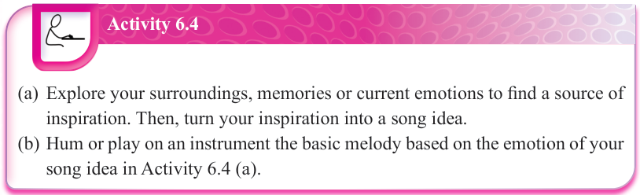
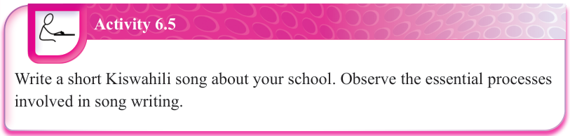

Activity 6.4
(a) Explore your surroundings, memories or current emotions to find a source of inspiration.
Then, turn your inspiration into a song idea.
(b) Hum or play on an instrument the basic melody based on the emotion of your song idea in Activity 6.4 (a).

Activity 6.5
Write a short Kiswahili song about your school.
Observe the essential processes involved in song writing.
![Exercise 6.2. Answer the following questions: 1. Why is finding inspiration considered the first step in writing a song? 2. How can the choice of song structure influence how a listener understands the message of the song? 3. Do you think a song can be effective if it does not follow common structure, like having verses and chorus? Why? 4. Sarah is trying to write her first song but feels stuck because she does not know what to write about. How would you help her? 5. Ali listens to his song several times and notices the bridge does not transition well from the second chorus. He makes some edits to improve the flow. Why is it important for songwriters like Ali to review and make changes after writing a song?](images/pg093_im007.png)
Exercise 6.2
Answer the following questions.
1. Why is finding inspiration considered the first step in writing a song?
2. How can the choice of song structure influence how a listener understands the message of the song?
3. Do you think a song can be effective if it does not follow common structure, like having verses and chorus?
Why?
4. Sarah is trying to write her first song but feels stuck because she does not know what to write about.
How would you help her?
5. Ali listens to his song several times and notices the bridge does not transition well from the second chorus.
He makes some edits to improve the flow.
Why is it important for songwriters like Ali to review and make changes after writing a song?
Ensemble performances
Ensemble performances in music involve a group of musicians playing instruments or singing together to create a unified sound. These performances can range from small to large groups of musicians. A good ensemble performance depends on balance, teamwork, and communication between the musicians. Furthermore, ensemble performances often require strong leadership, whether